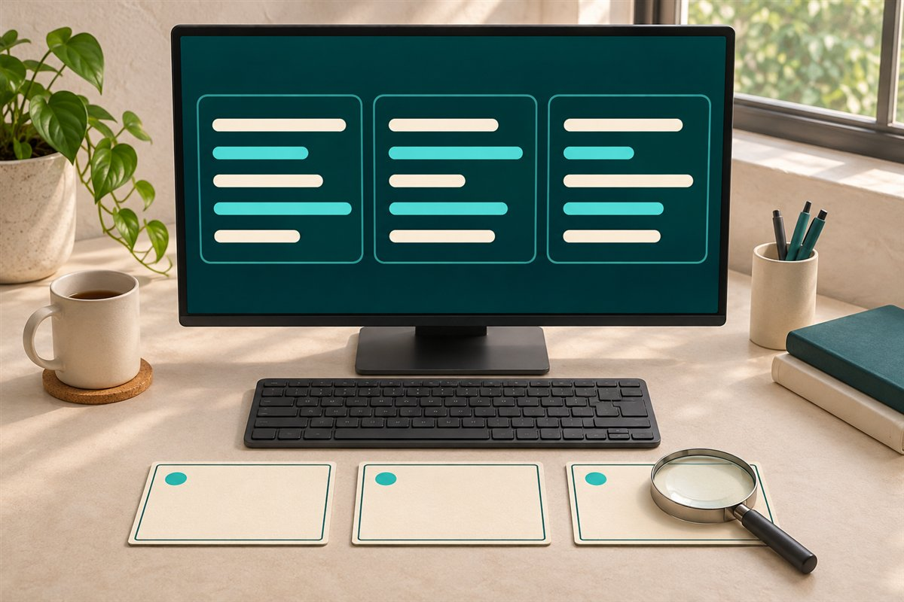

Entrevista exprés
Ordena lo que sabes hacer antes de entrar a la entrevista.
- Cuaderno de historias STAR y logros
- Banco de preguntas y práctica cronometrada
- Seguimiento de postulaciones en CSV


Recursos pequeños para resolver algo concreto: preparar una entrevista, ordenar pendientes o poner a prueba una idea. Primero mira qué incluyen. Después decide.
Empieza en el editor: diagnóstico local, vista previa y texto plano gratis. Los paquetes de exportación del CV siguen siendo productos independientes.
Pro US$5 · Multi-vacante US$9 · pago único
Un cuestionario de apoyo para psicología y recursos para organizar la administración. Revisa el alcance, las fuentes y los requisitos antes de usarlos.
Explora una muestra, revisa lo que incluye y elige el recurso que necesitas. Pago único y descarga desde tu recibo de Gumroad.
5 recursos
Ordena lo que sabes hacer antes de entrar a la entrevista.
Tareas, presupuestos y pendientes de cobro, en un mismo punto de partida.
Explora un flujo local con scripts legibles y pasos que puedes revisar.

Practica cómo revisar eventos y explicar lo que encontraste.
Tres diseños independientes para odontología, psicología y uñas.
Abre el ejemplo gratuito, lee el contenido y confirma que tienes las herramientas necesarias.
El botón de compra te lleva al checkout oficial de CyberSerch en Gumroad. Ahí revisas el importe final y pagas.
Gumroad proporciona el acceso a los archivos de los productos publicados. Conserva el recibo y comienza por el archivo README incluido.
El importe final y los impuestos aplicables se muestran en Gumroad antes de confirmar la compra.
Un archivo descargable con el contenido indicado en la ficha, no un servicio por encargo. Cuando la venta está activa, Gumroad gestiona el pago y el acceso desde el recibo. Si el botón dice “Explorar muestra”, todavía no estás comprando.
Las muestras de esta tienda no piden tus documentos. Los cuadernos descargables funcionan localmente; lee los requisitos de cada kit. Al salir hacia Gumroad, se aplican sus condiciones y su aviso de privacidad.
Conserva el recibo de Gumroad y usa el canal de contacto del vendedor que aparece allí. Incluye el producto, tu sistema y el paso que falla, sin contraseñas ni documentos personales. Cada kit indica su alcance de soporte; no incluye trabajo personalizado.
Depende del recurso. Cada ficha resume su licencia: los cuadernos son para uso personal o interno de tu negocio; los kits de IA y SOC usan MIT; las plantillas web permiten sitios propios y para clientes. Consulta el resumen de la ficha y la licencia completa incluida: los permisos de un kit no se extienden a los demás.